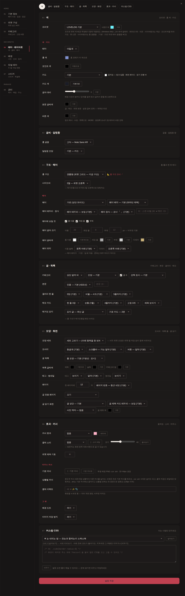
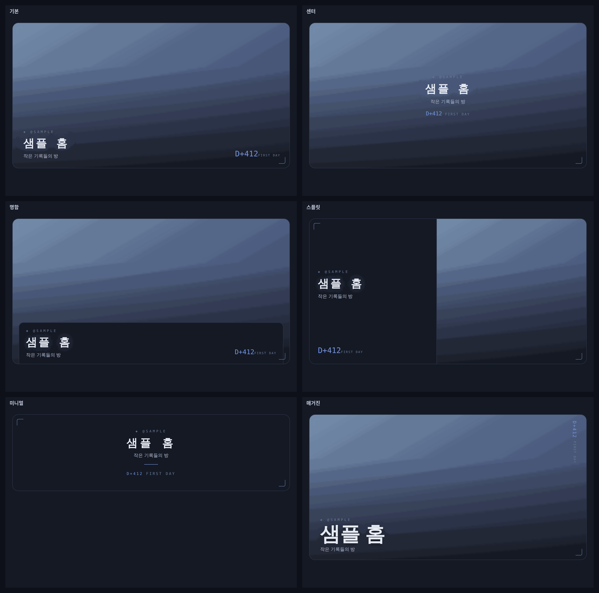
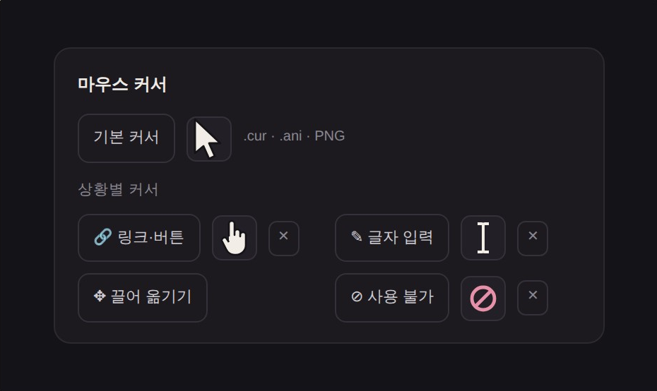

러브로그 · 꾸미기
테마·레이아웃
설정 창 위쪽의 탭(색 · 글씨·알림함 · 구조·헤더 · 글·목록 · 모양·화면 · 효과·커서 · 커스텀 CSS)을 누르면 그 섹션으로 바로 이동합니다. 섹션은 아래 순서대로 놓여 있고, 줄마다 왼쪽 이름표와 아래 설명으로 무엇을 바꾸는지 적혀 있습니다.
- 01 색
- 프리셋 — 색·글꼴·효과를 한 번에 갈아입는 세트입니다. 고른 뒤 아래에서 세부 조정합니다. 옛 신문은 신문 제호처럼 보이도록 헤더 사진을 기본으로 숨깁니다 — 사진을 쓰려면 프리셋 옆 「마스트헤드 아래 헤더 사진 보이기」를 켜세요(제호 아래 세피아 액자로, PC 240px · 폰 160px). 이어서 밝게/어둡게, 홈 색 · 포인트 색(자동/직접), 카드(기본 · 유리 · 종이 · 선만 · 라벨 없이) · 카드 색, 움직임(링크 밑줄 · 화면 페이드 · 읽기 진행 바), 글자 대비(배경 사진이 밝거나 덮개를 옅게 둬 글자가 묻힐 때 오른쪽으로), 본문 글씨색(글 · 메모 · 위젯 본문 · 설명 전체) · 버튼 색(테두리 버튼 전체).
- 02 글씨 · 알림함
- 홈 글꼴 12종(고딕·명조·프리텐다드·수트·고운돋움·고운바탕·마루 부리·리디바탕·나눔손글씨 펜·둥근모꼴·갈무리·페이퍼로지)과 🔔 알림함 모양.
- 03 구조 · 헤더
- 홈 구조(갠홈·블로그·매거진), 사이드바 2열/3열, 헤더 자리(가로 · 세로 · 세로 칼럼 왼쪽/오른쪽 · 헤더 없음 — 카테고리부터 시작), 배치 프리셋 6종(기본·센터·명함·스플릿·미니멀·매거진), 헤더 테두리, 액자 장식 7종(코너·없음·상단 띠·이중선·필름·스탬프·스캔라인), 헤더에 보일 것(홈 이름 · 계정 줄 · 부제)과 글자 크기 · 글씨색, 이름 블록 · 디데이 블록 자리. 〈미니멀〉은 배너 사진을 숨기는 배치입니다.
- 04 글 · 목록
- 카테고리 위치와 모양 · 글 수 · 선택 표시, 본문 인용 모양과 글씨 크기(11~20px), 갤러리 한 줄 장수 · 비율 · 줄 수, 메모 카드 개수 · 높이 · 고정 · 제목, 매거진 표지(매거진형일 때만).
- 05 모양 · 화면
- 모양 세트(아래 항목을 한 번에), 모서리(둥근/각진/뾰족 — 카드·버튼·알약까지) · 스크롤바 · 버튼 모양, 글 목록 줄 모양 6종(기본·번호 목차·점 리더·카드·미니멀·왼쪽 선), 목록 글씨색(제목 · 날짜 · 카테고리 칩), 태그 알약 · 썸네일, 한 페이지 글 수(3~100) · 페이지 번호 모양 5종, 글 전용 페이지(글 읽을 때 위젯 접기), 글 읽기 화면 — 글 상단 타이틀 카드(기본 · 표지형 · 신문 헤드라인 · 티켓) · 글 제목 카드 테두리 · 사진 액자(폴라로이드 · 필름 · 둥근 그림자 · 얇은 선) · 글 제목 색.
- 06 효과 · 커서
- 커서 효과(✨💗🫧), 🔊 클릭 소리(딸깍·톡·삑·뽁 또는 직접 올린 소리 — 방문자는 왼쪽 아래 🔇로 끔), 위젯 제목 기호(◈), 마우스 커서(기본 커서 · 상황별 커서), 클릭 이펙트 이모지, 배경 도트, 이미지 저장 방지.
- 07 커스텀 CSS
- 컨셉 프리셋 12종(눈 내리는 밤·벚꽃·반딧불이·심해 부유물·거품·빛 입자·금빛 별가루·VHS·비 오는 창가·필름 카메라·CRT·점선 스크랩북)을 [넣어보기]로 바로 미리 보고, 아래 칸에서 직접 고칩니다.

사진 자리img/ll-theme-panel.png
사진 자리img/ll-theme-header.png🔔 알림함 모양
- 홈 주인에게만 보이는 오른쪽 위 🔔 알림함 창의 모양입니다. 기본(카드) · 줄 목록 · 터미널 · 편지지 · 말풍선 중에서 고릅니다.
- 테마가 알아서 바꾸지 않습니다 — 고른 모양이 그대로 유지됩니다. 알림함 쓰는 법은 화면 구성과 버튼에 있습니다.
마우스 커서
- 기본 커서 — 투명 배경 PNG · .cur · .ani 파일을 올립니다(32~64px 권장, 128px 이하만 적용).
- .ani(움직이는 윈도우 커서)를 기본 커서로 넣으면 움직이는 그대로 재생됩니다. 브라우저가 커서 움직임을 지원하지 않아 그림을 따로 띄워 따라다니게 하는 방식이라, PC에서만 보입니다.
- 상황별 커서 — 윈도우 커서 세트처럼 🔗 링크·버튼 / ✎ 글자 입력 / ✥ 끌어 옮기기 / ⊘ 사용 불가 칸마다 다른 커서를 넣습니다. 비워둔 칸은 기본 커서를 따라갑니다. 상황별 칸에 넣은 .ani는 첫 장면으로 멈춥니다.
- .cur · .ani 파일은 클릭 지점(커서 끝)도 파일에 적힌 대로 맞춰집니다.
- 듀얼 테마를 쓰면 커서도 모드마다 따로 담깁니다.

사진 자리img/ll-cursor-set.png헤더 · 글 제목 카드 테두리
- 구조 · 헤더 섹션의 〈헤더 테두리 — 없음〉은 홈 맨 위 헤더 배너 카드를 두르는 1px 선을 지웁니다.
- 모양 · 화면 섹션 「글 읽기 화면」의 〈글 제목 카드 테두리 — 없음〉은 글 읽기 화면 맨 위 제목 카드의 선을 지웁니다 — 신문 헤드라인형의 위아래 선, 티켓형의 카드 테두리와 양옆 구멍 장식, 표지형 테두리까지. 기본형은 원래 선이 없어 달라지지 않습니다.
단색 배경과 덮개 색
- 배경 탭의 〈단색 배경〉에서 색을 고르면 홈 뒤에 그 색이 깔립니다. 배경 사진이 있으면 사진이 위에 옵니다.
- 배경 위에는 테마 색조가 섞인 덮개가 깔립니다. 사진이나 움짤을 원래 색 그대로 보여주려면 〈배경 덮개 농도〉를 0으로 내리고, 색은 빼되 어둡기만 남기고 싶으면 〈덮개 색 — 무채색〉을 고르세요. 카드·글씨 등 나머지 테마 색은 그대로입니다.